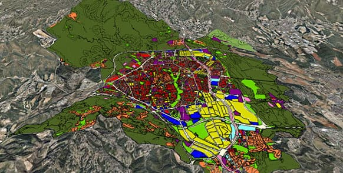
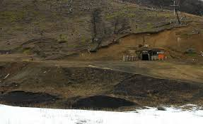
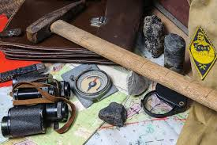

Portafolio de Geología
Selección de trabajos realizados en QGIS y análisis de terreno orientados al sector minero.

Modelado de datos espaciales y generación de cartografía temática para la identificación de zonas de interés geológico.

Reporte histórico y análisis técnico sobre las operaciones de extracción, infraestructura y protocolos de seguridad en la cuenca carbonífera.

Documentación fotográfica y muestreo de terreno para el análisis estructural preliminar en zonas de prospección.